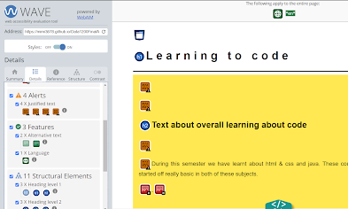
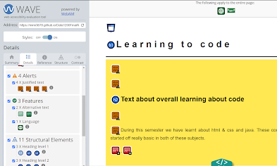

Accessibility
Here we are going to write about how we testet the code we made, for universal accessibility. Checked the website on webmaim.org (From now on referred to as C1 (Checker1) and AChecks.ca (From now on referred to as C2 (Checker 2))
General
Contrast error on all pages with our header text. (C2) We believe that this comes from the website-checker pushing the text further down than it should be. Since the gap doesn’t exist on our page, when we use it, since the text is on top of the picture, we believe that changing the color so that the checker is happy, would actually create a bigger contrast error.


Checked, validated, and made coding-choices for universal design
Home:
C1’s only found problem on our homepage was the contrast issue, that will happen on all pages. C2 found no problems on our homepage.
Reflection:
C1 and C2 found problems, this being that we didn’t have alt text for our images. This is now fixed. Same goes for the justified text that CA also found on the reflection page.
Accessibility:
Both C1 and C2 found the problem that none of the pictures on the accessibility page had alt text. We kept that in mind for when we were gonna put information in the page, not just placeholders, since the test was done on the page before we put in any of this information.
Topical:
C2 found no problems on our topical page. C1 had an alert to where our alt text on our images was the same as the text right beneath the images.
 

Conclusion
Skriv inn her

Here we are going to write about how we testet the code we made, for universal accessibility.
Checked the website on webmaim.org (From now on referred to as C1 (Checker A1 ) and AChecks.ca (From now on referred to as C2 (Checker B2))
General
Contrast error on all pages with our header text. (C2) We believe that this comes from the website-checker pushing the text further down than it should be. Since the gap doesn’t exist on our page, when we use it, since the text is on top of the picture, we believe that changing the color so that the checker is happy, would actually create a bigger contrast error.
Checked, validated, and made coding-choices for universal design
Home:
C1’s only found problem on our homepage was the contrast issue, that will happen on all pages. C2 found no problems on our homepage.
Reflection:
C1 and C2 found problems, this being that we didn’t have alt text for our images. This is now fixed. Same goes for the justified text that C1 also found on the reflection page.
Accessibility:
Both C1 and C2 found the problem that none of the pictures on the accessibility page had alt text. We kept that in mind for when we were gonna put information in the page, not just placeholders, since the test was done on the page before we put in any of this information.
Topical:
C2 found no problems on our topical page. C1 had an alert to where our alt text on our images was the same as the text right beneath the images.
Conclusion
Skriv inn her